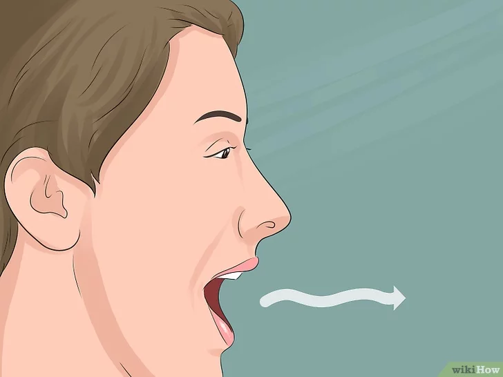
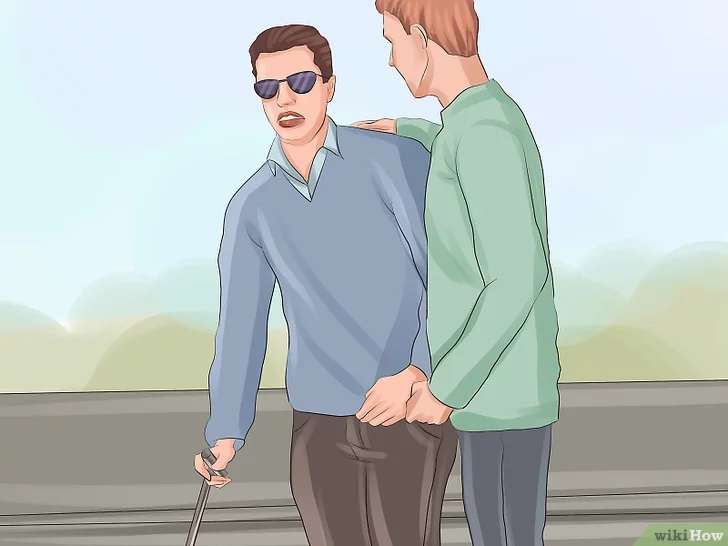
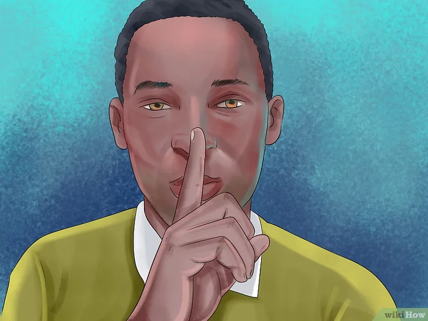
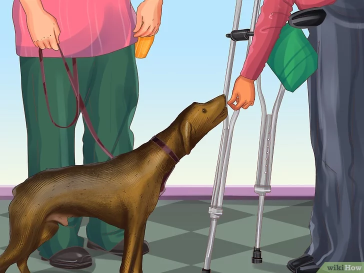

1. Sapa dengan suara keras
Ketika Anda memasuki ruangan tempat seorang penyandang tunanetra menunggu, langsung katakan sesuatu yang akan menunjukkan kehadiran Anda.
2. Katakan bila Anda meninggalkan ruangan.
Mungkin ini tidak intuitif, tetapi Anda harus selalu mengatakan sesuatu saat hendak pergi. Tidak sopan bila Anda pergi tanpa mengatakan apa pun.

3. Tanyakan apakah mereka mau dibantu.
Jika sepertinya mereka memerlukan bantuan, hal terbaik yang dapat di lakukan adalah bertanya. Katakan dengan sopan,“Mau kubantu?”
4. Ajukan pertanyaan secara langsung.
Banyak orang yang tidak memiliki pengalaman dengan kebutaan tidak yakin bagaimana berbicara dengan penyandang tunanetra, jadi mereka berbicara pada teman yang mendampingi.

5. Gunakan kata-kata seperti “lihat” dan “tampak”
Mungkin Anda memiliki kecenderungan untuk mengubah kebiasaan bicara yang normal dan mencari cara lain untuk mengucapkan kata seperti “lihat” & “tampak”.

6. Jangan membelai anjing penuntun milik penyandang tunanetra.
Anjing penuntun adalah hewan sangat terlatih yang memperbaiki kehidupan dan keamanan. Para penyandang tunanetra mengandalkan anjing untuk menunjukkan arah.